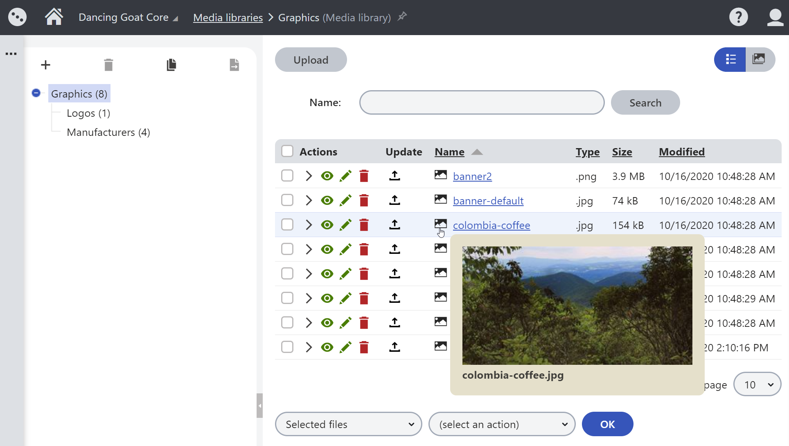
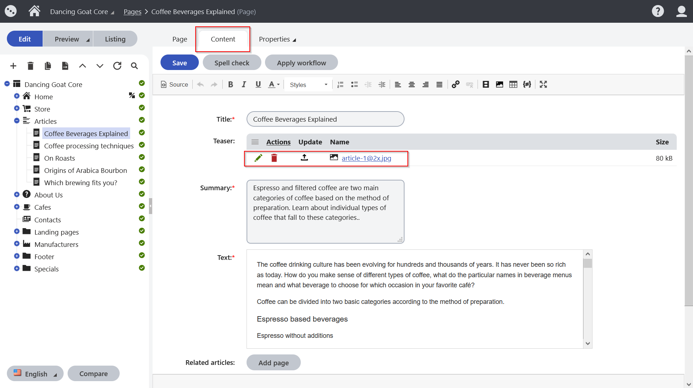
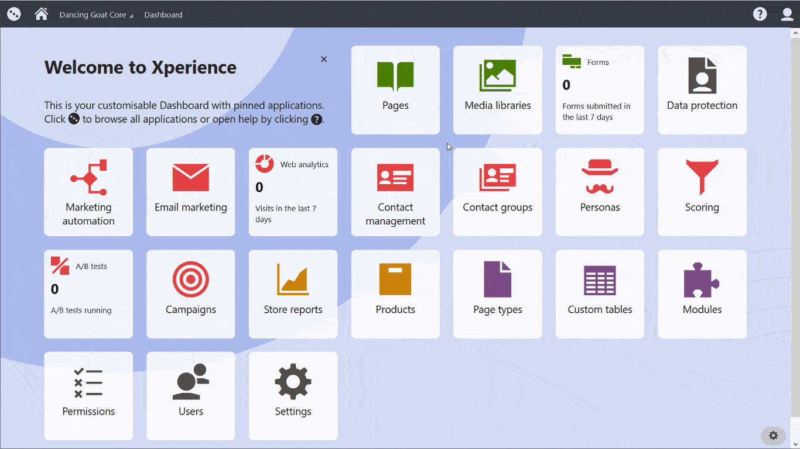

Working with files
This page is a part of the content management tutorial, which you should follow sequentially from beginning to end. Go to the first page: Using the Pages application.
You will learn about:
Important note
Dancing Goat is a specific sample website used for the purposes of the tutorial. Your company’s website will be different, and some functionalities may also be changed.
You already know how to work with the content of pages and how you can upload images. Let's take a closer look at what else you can do with images and other files you have created outside of Xperience.
Besides images, Xperience allows you to upload any files, such as videos, Word or PDF documents, or zipped packages. Developers will likely limit the types of files you can upload to your website to the most common (images, documents, or videos). You can also preview some of the uploaded files, such as images, directly in the Xperience administration. However, whether you can preview the file or not depends on your web browser capabilities rather than Xperience.
Files
There are a few ways you can add your files to Xperience. The two most common methods in Xperience are uploading files to media libraries or adding them to pages as attachments.
Media libraries
You can use the Media libraries application to store files of a different size or type on your Xperience website. Any file put into a media library is called a media library file.
Media libraries are the preferred way of storing files on your Xperience website. You can upload your files into an existing media library or create a new one.
Compared to page attachments, media libraries give you many advantages.
For example, you can organize your files in folders in your library. You can reuse your media library file in different places on your website. And when you update your media library file, it will update across your website.
This tutorial does not go into depth on media libraries because they are covered in depth in our documentation. Feel free to learn how you can create, organize, or delete your media libraries and their files.
Editing images
We recommended that you finalize your images (e.g., in Photoshop or another graphic editor) before uploading them to your website. However, the Xperience comes with a built-in image editor you can use to adjust your files quickly when you are, e.g., on the go. To preview an uploaded image (e.g., png or jpg) you want to edit, hover the cursor over the file's thumbnail name.

Clicking the Edit button opens an Xperience built-in image editor. You can use it to crop, re-size, and rotate your images directly in Xperience. On the file's Properties tab, you can edit some metadata. If implemented, metadata will add to the HTML markup of the page where the image is displayed. This will help with image SEO.
Your browser does not support the HTML5 video element
Working with non-image files
Even if you upload a different file-type than a supported image, you can edit some of its metadata, such as the file's name or its description.
Page attachments
Page attachments are parts of your pages, and you work with them in the Pages application. When you attach a file to the page, it becomes bound to it. If you move the page, its attachments move as well. Deleting the pages also deletes all of the attachments.
Xperience does not limit the number of attachments added to a single page. However, suppose you need to add larger files or upload many of them. In that case, we recommend using the Media libraries application instead. Why? Because the number and size of attachments influence the page's performance and can cause slower loading times.
Uploading page attachments
You can upload page attachments in three ways.
If implemented, you could use the file uploader on the Content tab. For example, the teaser image on Dancing goat's articles is an attachment.
The second way is to upload files on the Attachments tab in the Properties drop-down menu. To upload a file as an attachment, click the New attachment button. On the Dancing goat website, the Attachments tab lists files attached to the page using this approach. To test the feature, try uploading a file to any article on your tutorial website.
Lastly, developers could also prepare page builder widgets that will allow you to attach files to the page. This approach is not demoed on the Dancing goat website because we don't recommend it. If you want to, for example, display images on a page with page builder, you should use media library files.
The developers define which method you should use in which situations depending on your website's business requirements. You can also update, edit, or delete your existing attachments either on the Content or Attachments tab. Xperience provides the same editing options to the attached images as it does to the media library files.
 Task:
Task:
You found a picture that would be a great fit for your Coffee samples landing page. You decided to upload it to the hero image widget. The image needs some editing, such as rotating, to display correctly in the Hero image widget. And as you don't plan to use the previous hero image in the future, remove it from the media library.
 Need help?
Need help?
You can always get some help from our step-by-step guide:
Open your Coffee samples page under the Landing pages in the Pages application.
Navigate the cursor into your hero image widget.
Upload your new hero image from your computer.
Click the Save button.
Open the Media libraries application and Edit (ICON) the Graphics media library to review and edit your image.
Click the Edit (ICON) button next to your image to open the image editor. (If you are not sure which one it is, remember you can preview images by hovering your cursor over the image icon next to the image name.)
Open the Rotation options in the image editor.
Select the Rotate 90° left option
Click the Save & Close button.
Go back to the Pages application and navigate to the Coffee samples page to see your changes.
Here's some visual help:
Your browser does not support the HTML5 video element
Next page: Adding a new page